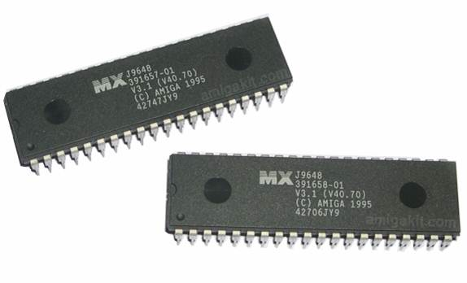

Storage - Test Your Knowledge At The Bottom ↓
ROM (Read Only Memory)

Read-only memory (ROM) is a class of storage medium used in computers and other electronic devices. Data stored in ROM can only be modified slowly, with difficulty, or not at all, so it is mainly used to distribute firmware (software that is very closely tied to specific hardware, and unlikely to need frequent updates).
Strictly, read-only memory refers to memory that is hard-wired, such as diode matrix and the later mask ROM. Although discrete circuits can be altered (in principle), ICs cannot and are useless if the data is bad. The fact that such memory can never be changed is a large drawback; more recently, ROM commonly refers to memory that is read-only in normal operation, while reserving the fact of some possible way to change it.
Other types of non-volatile memory such as erasable programmable read only memory (EPROM) and electrically erasable programmable read-only memory (EEPROM or Flash ROM) are sometimes referred to, in an abbreviated way, as "read-only memory" (ROM); although these types of memory can be erased and re-programmed multiple times, writing to this memory takes longer and may require different procedures than reading the memory. When used in this less precise way, "ROM" indicates a non-volatile memory which serves functions typically provided by mask ROM, such as storage of program code and nonvolatile data.
RAM (Random Access Memory)
 Alternatively referred to as main memory, primary memory, or system memory, Random Access Memory (RAM) is a computer storage location that allows information to be stored and accessed quickly from random locations within DRAM on a memory module. Because information is accessed randomly instead of sequentially like a CD or hard drive the computer can access the data much faster than it would if it was only reading the hard drive. However, unlike ROM and the hard drive RAM is a volatile memory and requires power in order to keep the data accessible, if power is lost all data contained in memory lost.
Alternatively referred to as main memory, primary memory, or system memory, Random Access Memory (RAM) is a computer storage location that allows information to be stored and accessed quickly from random locations within DRAM on a memory module. Because information is accessed randomly instead of sequentially like a CD or hard drive the computer can access the data much faster than it would if it was only reading the hard drive. However, unlike ROM and the hard drive RAM is a volatile memory and requires power in order to keep the data accessible, if power is lost all data contained in memory lost.
As the computer loads parts of the operating system and drivers are loaded into memory, which allows the CPU to process the instructions much faster and your computer to load faster. After the operating system has loaded, each program you open such as the browser you're using to view this page is loaded into memory while it is running. If too many programs are open the computer will swap the data in the memory between the RAM and the hard disk drive.
Over the evolution of computers there has been different variations of RAM used in computer. Some of the more common examples are DIMM, RIMM, SIMM, SO-DIMM, and SOO-RIMM.
Primary Storage
 Alternatively referred to as internal memory, main memory, and primary memory, primary storage is a storage location that holds memory for short periods of times while the computer running. For example, computer RAM and cache are both examples of a primary storage device. This storage is the fastest memory in your computer and is used to store data while it's being used. For example, when you open a program data is moved from the secondary storage into the primary storage.
Alternatively referred to as internal memory, main memory, and primary memory, primary storage is a storage location that holds memory for short periods of times while the computer running. For example, computer RAM and cache are both examples of a primary storage device. This storage is the fastest memory in your computer and is used to store data while it's being used. For example, when you open a program data is moved from the secondary storage into the primary storage.
Secondary Storage

 Alternatively referred to as external memory and auxiliary storage, secondary storage is a storage medium that holds information until it is deleted or overwritten regardless if the computer has power. For example, a floppy disk drive and hard drive are both good examples of secondary storage devices. As can be seen by the picture below there are three different storage on a computer, although primary storage is accessed much faster than secondary storage because of the price and size limitations secondary storage is used with today's computers to store all your programs and your personal data.
Alternatively referred to as external memory and auxiliary storage, secondary storage is a storage medium that holds information until it is deleted or overwritten regardless if the computer has power. For example, a floppy disk drive and hard drive are both good examples of secondary storage devices. As can be seen by the picture below there are three different storage on a computer, although primary storage is accessed much faster than secondary storage because of the price and size limitations secondary storage is used with today's computers to store all your programs and your personal data.
Volatile vs Non-Volatile
Volatile memory or volatile storage is computer memory that requires power to maintain the stored information. It retains its contents while powered, but when power is interrupted stored data is immediately lost. Non-volatile memory is memory that maintains its content even when unpowered.
Examples of Volatile Memory
RAM (Random Access Memory)
Processor Cache
Examples of Non-Volatile Memory
SSDs (Solid State Drives)
HDDs (Hard Disk Drives)
USB Drives (Universal Serial Bus Drives)
 Slower than an SSD but comes with much more storage.
Slower than an SSD but comes with much more storage.
{kind=link}